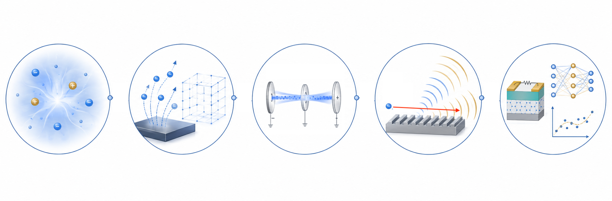
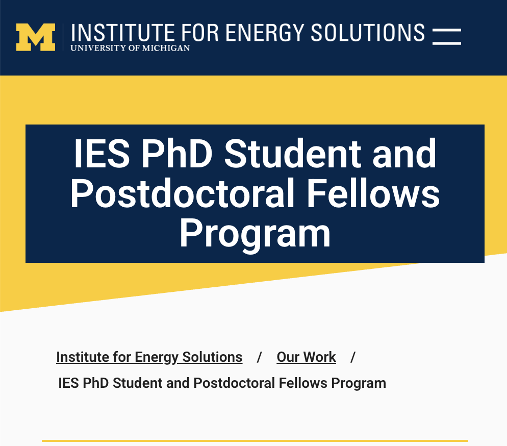
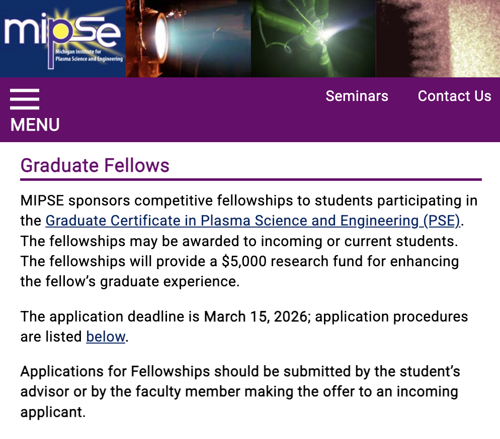

Electron EmissionField and space-charge-limited processes
Plasma physics · Vacuum electronics · Scientific ML
Modeling electron transport from emission to electromagnetic interaction.
I am a Ph.D. student in Nuclear Engineering and Radiological Sciences at the University of Michigan. My research combines analytical theory, particle-in-cell simulation, finite-element modeling, and data-driven methods to study electron emission, space-charge transport, THz sources, and electronic interfaces.
Beam-Wave InteractionTHz vacuum electronic sources
Thin-Film InterfacesCurrent crowding and contact resistance
Scientific ComputingPIC, FEM, theory, and machine learning
About
Physics-based research across beams, plasmas, and electronic materials.
My work connects fundamental transport theory with computational modeling and experimentally relevant device questions.
I study how electrons are emitted, accelerated, transported, modulated, and coupled to electromagnetic structures, and how interfaces control current flow in modern electronic devices.
In vacuum electronics, I work on Smith-Purcell radiation, slow-wave structures, hot-tube dispersion, start-current scaling, field emission, and space-charge-limited current. I use analytical derivations and particle-in-cell simulations to evaluate emission models, boundary conditions, phase-space evolution, and field growth.
In electronic materials, I develop field-solution models for current crowding and contact resistance in anisotropic thin films. My current work also applies data science and machine-learning methods to spatially resolved photocathode quantum-efficiency measurements.
Selected methods and tools
Analytical theoryParticle-in-cell simulationFinite-element modelingCST StudioWarpXXOOPICMATLABPythonScientific ML
Education
- Present
University of Michigan
Ph.D. in Nuclear Engineering and Radiological Sciences
- 2024
Michigan State University
M.Sc. in Electrical and Computer Engineering
- 2016
Bangladesh University of Engineering and Technology
B.Sc. in Electrical and Electronic Engineering
Professional experience
Academic and Research Appointments
01
Jun 2026 – Aug 2026
Graduate Student Intern
Los Alamos National Laboratory
Spatially resolved photocathode quantum-efficiency analysis and scientific machine learning.
02
Jan 2025 – Present
Graduate Research Assistant
University of Michigan
Plasma physics, electron emission, beam-wave interaction, and interface physics.
03
May 2022 – Aug 2022
Visiting Graduate Student
Singapore University of Technology and Design
Analytical modeling of AC contact resistance and interface effects at THz frequencies.
04
Aug 2021 – Dec 2024
Graduate Research Assistant
Michigan State University
Smith-Purcell radiation, grating optimization, and beam-wave modeling.
Research
Research Interests
My research connects electron emission, beam-wave interaction, plasma simulation, thin-film transport, and scientific machine learning.
01
Vacuum electronics and THz radiation sources
I study how grating geometry and dispersion control spatial growth, start current, and mode selection in compact Smith-Purcell radiation sources.
- Slow-wave structures
- Hot-tube dispersion
- Start-current scaling
02
Space-charge-limited current and emission physics
I develop models for cold, finite-energy, multi-energy, and thermionic electron populations, including transmitted and reflected phase-space dynamics.
- Child-Langmuir theory
- Field emission
- Velocity distributions
03
PIC simulation of beams, plasmas, and magnetrons
I use particle-in-cell methods to investigate emission, beam-wave coupling, electromagnetic field growth, particle phase space, and frequency spectra.
- WarpX and XOOPIC
- Diagnostics
- Electromagnetic PIC
04
Anisotropic contact resistance in 2D materials
I model current crowding and spreading resistance in vertical and edge contacts to anisotropic thin films using exact field solutions and finite-element validation.
- Current crowding
- Spreading resistance
- THz interface response
05
Machine learning for plasma and photocathode data
I apply physics-guided models, Gaussian processes, and uncertainty quantification to plasma, beam, and spatially resolved photocathode datasets.
- Physics-informed ML
- Gaussian processes
- Uncertainty quantification

Integrated workflow
Theory, simulation, and data
My work moves between first-principles derivation, computational modeling, diagnostics, and interpretable data analysis.
Publications
Selected publications and presentations
Work on THz Smith-Purcell radiation, anisotropic transport, contact resistance, and plasma-device modeling.
Impact of Anisotropic Conductivity on Current Crowding and Spreading Resistance in Vertical Contacts to 2D Thin Films
M. A. Faisal and P. Zhang
Parametric Analysis on Enhancement of THz Smith-Purcell Radiation by Two-Layer Grating Structure
M. A. Faisal and P. Zhang
Grating Optimization for Smith-Purcell Radiation: Direct Correlation Between Spatial Growth Rate and Starting Current
M. A. Faisal and P. Zhang, vol. 70, no. 6, pp. 2860–2863
2026Journal, conferences, and presentations
Impact of Anisotropic Conductivity on Current Crowding and Spreading Resistance in Vertical Contacts to 2D Thin Films. M. A. Faisal and P. Zhang, ACS Applied Electronic Materials, 2026.
Exact Field-Solution Framework for Anisotropic Charge Transport and Contact Resistance in Edge-Contacted 2D Transistors. M. A. Faisal and P. Zhang, 68th Electronic Materials Conference, Oral Presentation, June 24–26, 2026.
Exact Field Solution of Contact Resistance in Anisotropic 2D Transistors with Experimental Benchmarking. M. A. Faisal and P. Zhang, 84th Device Research Conference, Poster Presentation, June 21–24, 2026.
Start-Current Thresholds for Smith-Purcell Radiation in Planar and Cylindrical Gratings. M. A. Faisal and P. Zhang, 2026 IEEE International Conference on Plasma Science, TuB3.3, June 22–26, 2026.
PASCHEN-1D: A One-Dimensional Time-Dependent Plasma-Circuit Solver with Self-Consistent Multi-Mechanism Surface Emission. A. Iqbal, Y. Heri, B. Wang, L. Jin, M. A. Faisal, and P. Zhang, 2026 IEEE International Conference on Plasma Science, MP12.
2025Journal and presentations
Parametric Analysis on Enhancement of THz Smith-Purcell Radiation by Two-Layer Grating Structure. M. A. Faisal and P. Zhang, IEEE Transactions on Plasma Science, 2025.
Spatial Growth Rate Outperforms Interaction Impedance in Predicting Smith-Purcell Radiation Gain. M. A. Faisal and P. Zhang, 67th Annual Meeting of the APS Division of Plasma Physics, 2025.
Anisotropic Charge Transport and Current Crowding in Vertical Thin-Film Contacts with 2D Layered Materials. M. A. Faisal and P. Zhang, 16th MIPSE Graduate Student Symposium, 2025.
2024IEEE conference
Analysis of THz Smith-Purcell Radiation in Single- and Two-Layer Gratings Utilizing Hot-Tube Dispersion Relation. M. A. Faisal and P. Zhang, 2024 Joint International Vacuum Electronics Conference and International Vacuum Electron Sources Conference.
2023Journal, IEEE conferences, and presentations
Grating Optimization for Smith-Purcell Radiation: Direct Correlation Between Spatial Growth Rate and Starting Current. M. A. Faisal and P. Zhang, IEEE Transactions on Electron Devices, 2023.
Smith-Purcell Radiation by a Two-Layer Grating Structure. M. A. Faisal and P. Zhang, 24th International Vacuum Electronics Conference, 2023.
Minimizing Starting Current of Smith-Purcell Radiation by Grating Optimization Using Dispersion Relation. M. A. Faisal and P. Zhang, IEEE International Conference on Plasma Science, 2023.
Analyzing Spatial Growth Rate and Starting Current in Smith-Purcell Radiation Using Single- and Two-Layer Grating Structures. M. A. Faisal and P. Zhang, 14th Annual MIPSE Graduate Student Symposium, 2023.
Reducing Starting Current of Smith-Purcell Radiation with a Two-Layer Grating Structure. M. A. Faisal and P. Zhang, APS Gaseous Electronics Conference, 2023.
2022IEEE conference
Smith-Purcell Radiation with Different Grating Parameters and Beam Bunching Frequencies. M. A. Faisal, A. Iqbal, and P. Zhang, 23rd International Vacuum Electronics Conference, pp. 454–455, 2022.
In progressCurrent research directions
Anisotropic charge transport and contact resistance in edge-contacted 2D transistors. Analytical modeling and experimental benchmarking in progress.
Space-charge-limited current in vacuum diodes. Analytical, sheet-model, and PIC-based study in progress.
Modeling spatially resolved photocathode QE maps. Threshold-sensitive data-analysis and scientific machine-learning workflow in progress.
Achievements & certificates
Recognition and technical training
Fellowships and graduate certificates supporting my research in plasma science, energy, accelerator science, semiconductor devices, and high-performance computing.

Fellowship · 2026
IES PhD Student Fellow
Selected for the University of Michigan Institute for Energy Solutions PhD Student and Postdoctoral Fellows Program.
Program page
Fellowship · 2026–2027
MIPSE Graduate Fellow
Selected as a Michigan Institute for Plasma Science and Engineering Graduate Fellow.
Fellowship pageService
Professional service and student leadership
Technical coordination, peer review, and leadership within IEEE and the plasma-science community.
Student leadership and IEEE service
Student leadership and IEEE service
- IEEE NPSS MSU Student Branch: student leadership and technical activities.
- IEEE Southeastern Michigan: student representative and technical chair service for regional conference activities.
- Chair, IEEE NPSS Student Branch, Michigan State University | Nov 2022 – Dec 2024: organized technical seminars and coordinated collaboration with industry and IEEE chapters.
Reviewer service
Reviewer service
- Reviewer, IEEE Access | July 2025 – Present: peer-review service for interdisciplinary engineering and applied science manuscripts.
- Reviewer, IEEE Transactions on Plasma Science | February 2026 – Present: peer-review service for plasma science, beam physics, and related research manuscripts.
Contact
Research discussions and collaborations are welcome.
Email is the best way to reach me about plasma physics, vacuum electronics, electron emission, thin-film interfaces, or scientific machine learning.